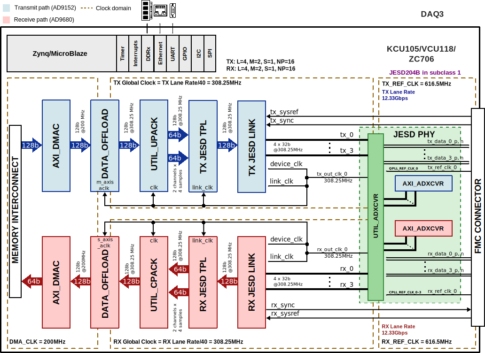
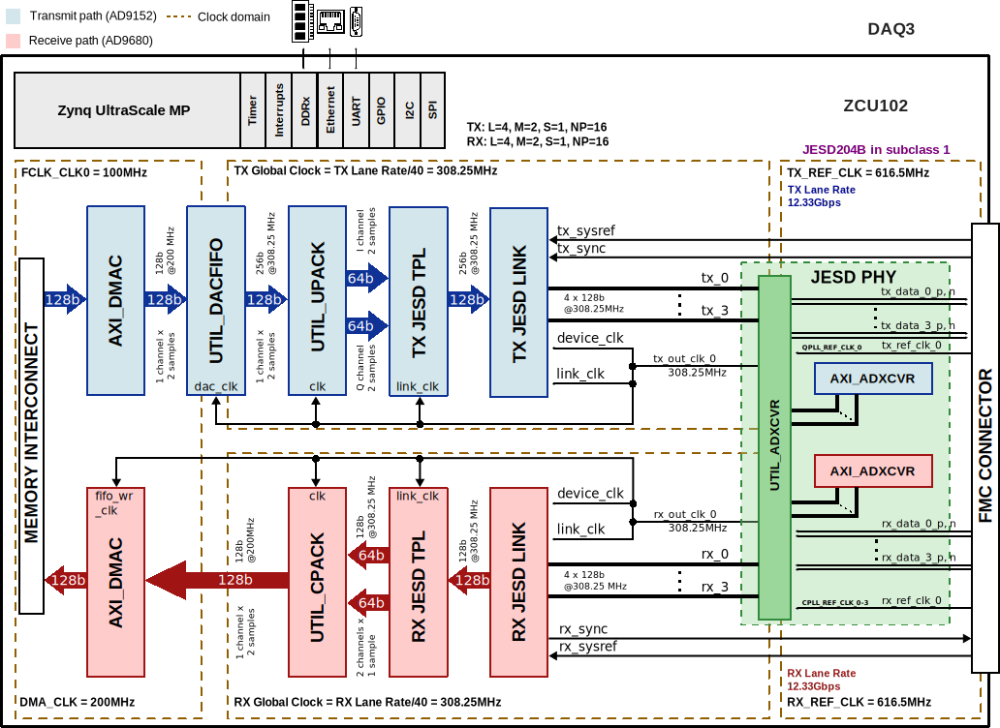

DAQ3 HDL Project
Overview
The DAQ3 reference design showcases the EVAL-FMCDAQ3-EBZ evaluation board, which is comprised of the AD9680 dual, 14-bit, 1.25 GSPS, JESD204B (subclass 1) ADC, the AD9152 dual, 16-bit, 2.5 GSPS, JESD204B (subclass 1) DAC, and the AD9528 JESD204B/C clock generator, and some power management components. It is clocked by an internally generated carrier platform via the FMC connector, comprising a completely self contained data acquisition and signal synthesis prototyping platform.
Supported boards
Supported devices
Supported carriers
Evaluation board |
Carrier |
FMC slot |
|---|---|---|
FMC HPC |
||
FMC+ |
||
FMC HPC0 |
||
FMC HPC |
Block design
The difference between the KCU105/VCU118/ZC706 designs and the ZCU102 one, is the use of AXI_ADCFIFO: in the Zynq UltraScale-based designs, it is not instantiated.
Block diagram
KCU105/VCU118/ZC706
The data path and clock domains are depicted in the below diagram:
{kind=link}
This configuration was built using the make command with the following
parameters:
/hdl/projects/daq3/zc706$
make RX_JESD_M=2 \
RX_JESD_L=4 \
RX_JESD_S=1 \
TX_JESD_M=2 \
TX_JESD_L=4 \
TX_JESD_S=1
Block name |
IP name |
Documentation |
Additional info |
|---|---|---|---|
AXI_ADCFIFO |
— |
— |
|
AXI_ADXCVR |
2 instances, one for RX and one for TX |
||
AXI_DMAC |
2 instances, one for RX and one for TX |
||
RX JESD LINK |
axi_mxfe_rx_jesd |
Instantiaded by |
|
RX JESD TPL |
axi_ad9680_tpl_core |
Instantiated by |
|
TX JESD LINK |
axi_mxfe_tx_jesd |
Instantiaded by |
|
TX JESD TPL |
axi_ad9152_tpl_core |
Instantiated by |
|
UTIL_ADXCVR |
Used for both AXI ADXCVR instances |
||
UTIL_CPACK |
— |
||
UTIL_DACFIFO |
— |
— |
|
UTIL_UPACK |
— |
ZCU102
The data path and clock domains are depicted in the below diagram.
{kind=link}
This configuration was built using the make command with the following
parameters:
/hdl/projects/daq3/zcu102$
make RX_JESD_M=2 \
RX_JESD_L=4 \
RX_JESD_S=1 \
TX_JESD_M=2 \
TX_JESD_L=4 \
TX_JESD_S=1
Block name |
IP name |
Documentation |
Additional info |
|---|---|---|---|
AXI_ADXCVR |
2 instances, one for RX and one for TX |
||
AXI_DMAC |
2 instances, one for RX and one for TX |
||
RX JESD LINK |
axi_mxfe_rx_jesd |
Instantiaded by |
|
RX JESD TPL |
axi_ad9680_tpl_core |
Instantiated by |
|
TX JESD LINK |
axi_mxfe_tx_jesd |
Instantiaded by |
|
TX JESD TPL |
axi_ad9152_tpl_core |
Instantiated by |
|
UTIL_ADXCVR |
Used for both AXI ADXCVR instances |
||
UTIL_CPACK |
— |
||
UTIL_DACFIFO |
— |
— |
|
UTIL_UPACK |
— |
Clock scheme
Internal clock sources for both the ADC and the DAC, coming from AD9528 clock-generator chip (device clocks and reference clocks)
External trigger coming from J1 SMA connector
Configuration modes
The design has one JESD204B receive chain and one transmit chain, each with 4 lanes.
Each chain consists of a transport layer represented by a JESD TPL module, a link layer represented by a JESD LINK module, and a physical layer shared among chains, represented by an XCVR module.
The HDL project in its current state, has the link operating in subclass 1.
Rx/Tx device clock - 308.25 MHz
Reference clock - 616.5 MHz
JESD204B Rx/Tx lane rate - 12.33 Gbps
The following are the parameters of this project that can be configured:
[RX/TX]_JESD_M: number of converters per link
[RX/TX]_JESD_L: number of lanes per link
[RX/TX]_JESD_S: number of samples per frame
Detailed description
The digital interface consists of 4 transmit and 4 receive lanes running at 12.33 Gbps (default).
The devices’ interfaces are shared by the same set of transceivers, followed by the individual JESD204B and ADC/DAC pcores. The transceivers then interface to the cores at 128 bits at 308.25MHz. The cores are programmable through an AXI-lite interface.
The data path consists of independent DMA interfaces for the transmit and receive paths. The data is sent or received based on the configuration (programmable) from separate transmit and receive chains.
The DAC data may be sourced from an internal data generator (DDS, pattern or PRBS) or from the external DDR via DMA. The internal DDS phase and frequency are programmable.
The ADC data is sent to the DDR via DMA. The core also supports PN monitoring at the sample level. This is different from the JESD204B-specific PN sequence (though they both claim to be from the same equation).
The device control and monitor signals are interfaced to a GPIO module. The SPI signals are controlled by a separate AXI based SPI core.
JESD204B in subclass 1 with lane rate 12.33 Gbps
Rx, Tx: L=2, M=4, S=1, NP=16
CPU/Memory interconnects addresses
The addresses are dependent on the architecture of the FPGA, having an offset added to the base address from HDL (see more at CPU/Memory interconnects addresses).
Instance |
Zynq/Microblaze |
ZynqMP |
|---|---|---|
axi_ad9152_tpl_core |
0x44A0_4000 |
0x84A0_4000 |
axi_ad9152_xcvr |
0x44A6_0000 |
0x84A6_0000 |
axi_ad9152_jesd |
0x44A9_0000 |
0x84A9_0000 |
axi_ad9152_dma |
0x7C42_0000 |
0x9C42_0000 |
axi_ad9680_tpl_core |
0x44A1_0000 |
0x84A1_0000 |
axi_ad9680_xcvr |
0x44A5_0000 |
0x84A5_0000 |
axi_ad9680_jesd |
0x44AA_0000 |
0x84AA_0000 |
axi_ad9680_dma |
0x7C40_0000 |
0x9C40_0000 |
SPI connections
SPI type |
SPI manager instance |
SPI subordinate |
CS |
|---|---|---|---|
PS |
SPI 0 |
AD9528 |
0 |
PS |
SPI 0 |
AD9152 |
1 |
PS |
SPI 0 |
AD9680 |
2 |
GPIOs
GPIO signal |
Direction |
HDL GPIO EMIO |
Software GPIO |
Software GPIO |
|---|---|---|---|---|
(from FPGA view) |
Zynq-7000 |
Zynq MP |
||
adc_pd |
INOUT |
38 |
92 |
116 |
dac_txen |
INOUT |
37 |
91 |
115 |
adc_fdb |
INOUT |
36 |
90 |
114 |
adc_fda |
INOUT |
35 |
89 |
113 |
dac_irq |
INOUT |
34 |
88 |
112 |
clkd_status |
INOUT |
32 |
86 |
110 |
Interrupts
Below are the Programmable Logic interrupts used in this project.
Instance name |
HDL PS |
HDL MB |
Linux Zynq |
Actual Zynq |
Linux ZynqMP |
Actual ZynqMP |
|---|---|---|---|---|---|---|
axi_ad9680_dma |
13 |
12 |
57 |
89 |
109 |
141 |
axi_ad9152_dma |
12 |
13 |
56 |
88 |
108 |
140 |
axi_ad9680_jesd |
11 |
14 |
55 |
87 |
107 |
139 |
axi_ad9152_jesd |
10 |
15 |
54 |
86 |
106 |
138 |
Building the HDL project
The design is built upon ADI’s generic HDL reference design framework. ADI distributes the bit/elf files of these projects as part of the ADI Kuiper Linux. If you want to build the sources, ADI makes them available on the HDL repository. To get the source you must clone the HDL repository.
Then go to the hdl/projects/daq3/$carrier location and run the make command.
Linux/Cygwin/WSL
Example of running the make command without parameters (using the default
configuration):
~$
cd hdl/projects/daq3/zcu102
~/hdl/projects/daq3/zcu102$
make
Example of running the make command with parameters:
~$
cd hdl/projects/daq3/zcu102
~/hdl/projects/daq3/zcu102$
make RX_JESD_M=4 RX_JESD_L=2 TX_JESD_M=4 TX_JESD_L=2
The result of the build, if parameters were used, will be in a folder named
by the configuration used: RXM4_RXL2_TXM4_TXL2.
A more comprehensive build guide can be found in the Build an HDL project user guide.
Software considerations
ADC - crossbar config
RX lanes are not reordered, they are the same as the physical lanes.
DAC - crossbar config
Due to physical constraints, TX lanes are reordered as described in the following table:
For example, physical lane 2 from DAC connects to logical lane 1 from the FPGA. Therefore the crossbar from the device must be set accordingly.
logical lane |
0 |
1 |
2 |
3 |
|---|---|---|---|---|
physical lane |
0 |
2 |
3 |
1 |
Resources
More information
Support
Analog Devices, Inc. will provide limited online support for anyone using the reference design with ADI components via the EngineerZone FPGA reference designs forum.
For questions regarding the ADI Linux device drivers, device trees, etc. from our Linux GitHub repository, the team will offer support on the EngineerZone Linux software drivers forum.
For questions concerning the ADI No-OS drivers, from our No-OS GitHub repository, the team will offer support on the EngineerZone microcontroller No-OS drivers forum.
It should be noted, that the older the tools’ versions and release branches are, the lower the chances to receive support from ADI engineers.